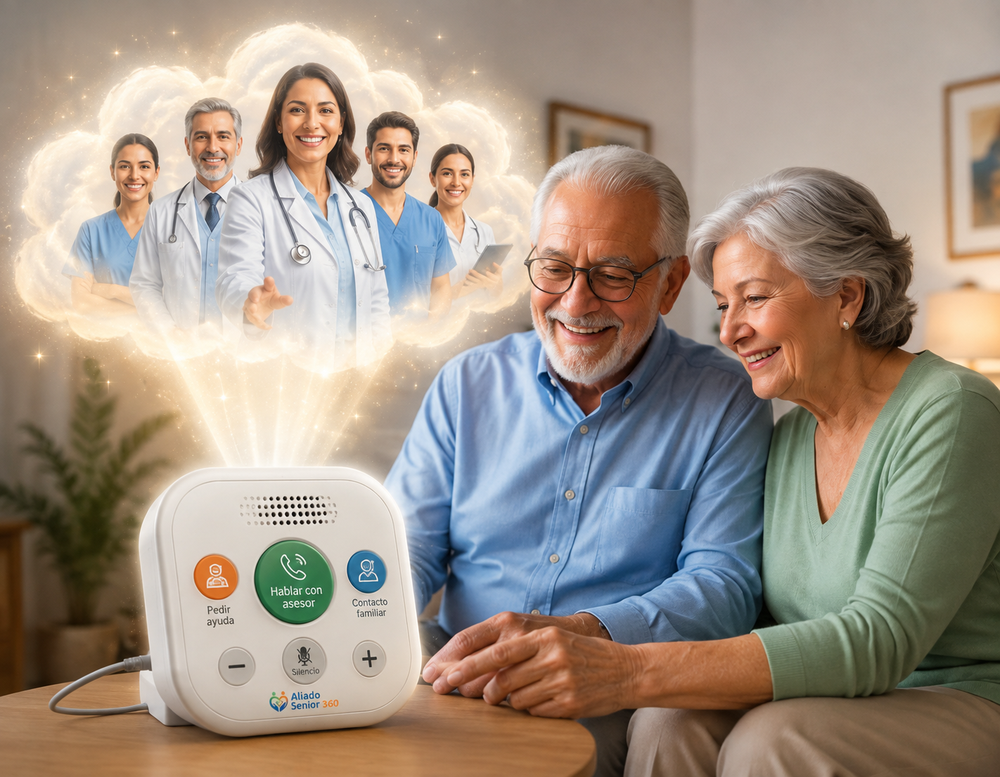
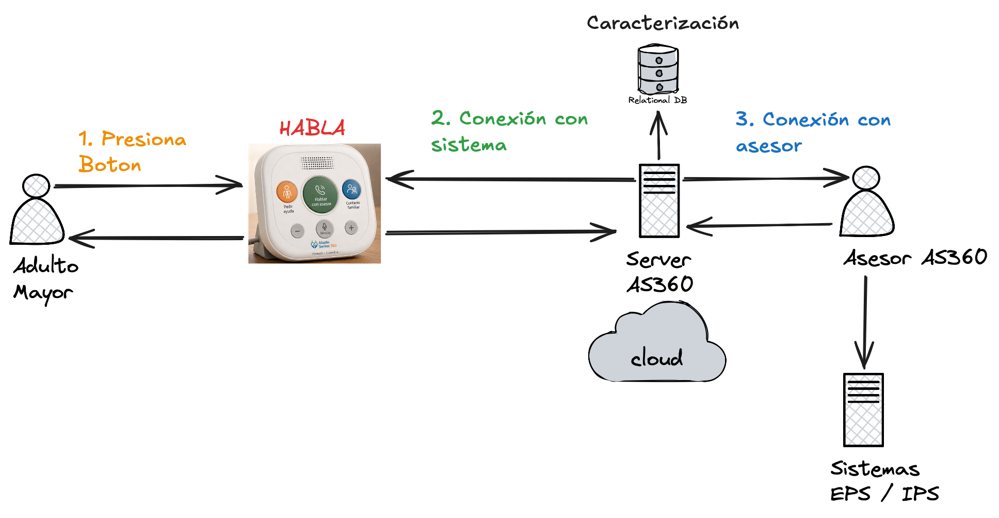

Citas y autorizaciones sin el laberinto
Radicación, seguimiento y resolución de trámites médicos ante EPS y medicina prepagada.
Meta a 24 meses4.000
Un programa integral que combina acompañamiento humano, orientación y gestión digital para que los adultos mayores enfermos accedan a sus servicios de salud de forma oportuna.
Una propuesta académica de la Maestría en Gerencia de Proyectos · UPB
Acompañamiento activoDeterioro de la salud de los adultos mayores enfermos de la ciudad de Medellín por la dificultad para gestionar sus servicios médicos a través de herramientas digitales.
Acompañamiento humano para facilitar el acceso y la gestión oportuna de servicios de salud en adultos mayores de Medellín.
Por la dificultad para gestionar sus servicios médicos a través de herramientas digitales.
“UNA BARRERA DIGITAL PUEDE CONVERTIRSE EN UNA BARRERA DE ACCESO A LA SALUD”.
El árbol de objetivos traduce la problemática en medios y fines verificables, alineados con los tres objetivos específicos.
Facilitar el acceso y la gestión oportuna de los servicios de salud de los adultos mayores enfermos de la ciudad de Medellín mediante un programa integral de acompañamiento, orientación y gestión de trámites digitales.
Fines directos: continuidad y oportunidad en la gestión, mayor acompañamiento, menos barreras digitalesCitas, autorizaciones, exámenes, controles y demás trámites de salud.
Identificar necesidades y facilitar la resolución de las solicitudes de salud.
Gestión digital de peticiones, quejas, reclamos y acciones de tutela.
Cada componente responde a un objetivo específico del proyecto y tiene una meta verificable a 24 meses.
Radicación, seguimiento y resolución de trámites médicos ante EPS y medicina prepagada.
Convenios y canales de atención que reduzcan barreras para adultos mayores.
Caracterización, acompañamiento y seguimiento individualizado hasta resolver la solicitud.
Orientación en PQR, derechos de petición y acciones de tutela cuando exista una vulneración.
Nos apoyamos en las plataformas existentes de las EPS e IPS, sin desarrollar aplicaciones propias.
Conecta al adulto mayor con un asesor y con su red de apoyo mediante botones grandes y voz clara.
El dispositivo HABLA y el equipo de asesores convierten la solicitud del adulto mayor en una gestión acompañada hasta su resolución.

El dispositivo HABLA conecta al adulto mayor con un asesor y con su red de apoyo mediante botones grandes, voz clara y comunicación bidireccional.
Conoce la administración del proyecto y conversa con el equipo sobre la siguiente etapa.
| Objetivo específico | Componente | Servicios que lo cubren |
|---|---|---|
| 1. Gestionar y hacer seguimiento a citas, autorizaciones, exámenes y trámites | Gestión y seguimiento de trámites de salud | Pedir citasAutorizacionesSolicitar medicamentos |
| 2. Brindar atención y acompañamiento personalizado | Atención y acompañamiento personalizado | Acompañamiento (caracterización + seguimiento individual del caso) |
| 3. Orientar y proteger los derechos en salud | Orientación y protección de derechos en salud | Acompañamiento jurídico (PQR, derechos de petición, tutelas) |
| (Transversal a los tres objetivos) | Seguimiento permanente | Recordatorio de citas y medicamentos |
Suscripción mensual: cada adulto mayor puede acceder al servicio por 100.000 pesos colombianos al mes.
El diagrama muestra el recorrido desde la solicitud del adulto mayor hasta la gestión del caso. El dispositivo HABLA permite pedir apoyo de forma sencilla y conecta al usuario con un asesor, quien orienta, registra y hace seguimiento ante EPS e IPS. Así, una necesidad se convierte en una gestión trazable y en un acceso más oportuno a los servicios de salud.